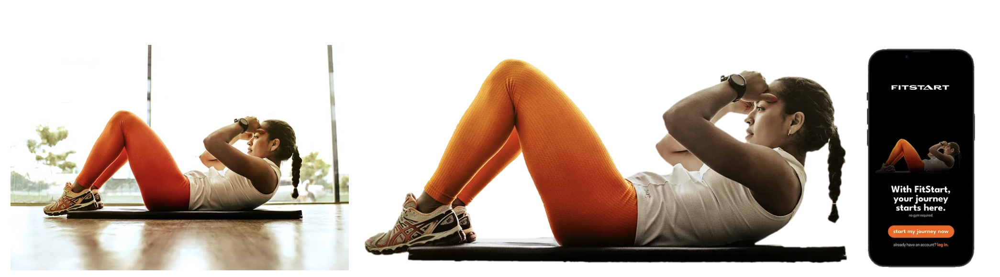
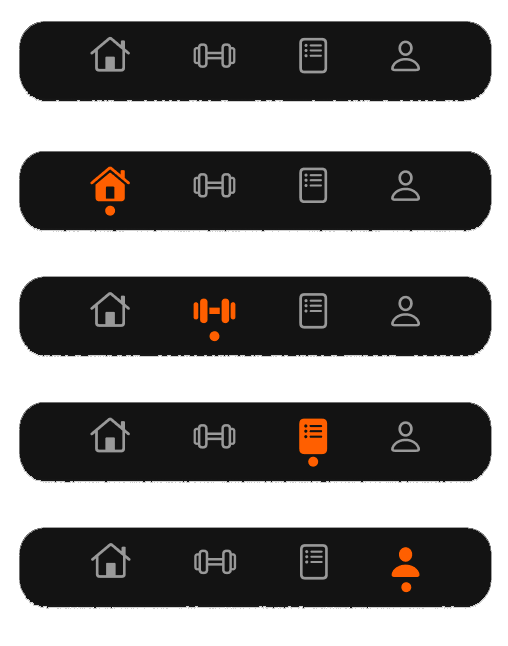

FitStart
App UI Design in Figma
FitStart is a mobile app designed for a fitness company that has numerous workout videos for the user to follow along to.
Role: designer Date: 2023
Overview
First, with a group, we created a fictional fitness company, entitled FitStart, that focuses on home workouts for people that don’t have access to gyms. Then, we created a style guide for the company, and then created prototypes for this company's desktop and mobile website and mobile app. I was tasked with designing the mobile app, which I created using Figma.
The problem
We needed an easy way for users to access the company’s workouts wherever they are. This app would allow users to watch workout videos, save videos to playlists, set goals, and more, all from their mobile devices. We were inspired by apps such as Apple’s fitness app and the Nike app.
Solution
After spending some time online searching for some inspiration, I then went into Figma and began working. Like the inspiration, I wanted the start page to have an attention-grabbing image over the log-in buttons. I took to Unsplash and found a perfect image of a woman doing a sit-up. To make it match the brand better, I brought it into Photoshop and adjusted the colors and the backgrounds.
I wanted this app to have four pages: a home page, explore page, a saved workouts page, and a profile page. I created the home page with different highlights of what a user would find interesting, such as their stats for the week and month, and a featured workout of the day recommended for them. On the explore and saved workouts page, I used a card layout so a user could see a lot of different workouts at once and easily browse between them. I learned a lot of new features in Figma while creating these pages, like auto-layout and the using both vertical and horizontal scrolling on one page.
My last step was to create a nav bar for easy navigating between pages. I started by creating a component of the nav bar and then created variants for the different pages. I used Apple’s SF symbols as the navigation icons, and when clicked they would turn orange with a circle at the bottom. Commonly seen throughout the brand and the app are periods at the end of headings, so I thought the dot would be a perfect reference to that!
THE FINAL PRODUCT
Finally, I had a product I was happy with. While I had used Figma for other projects before, I took this project to explore some of Figma’s features I’d never used such as auto-layout and components. I learned a lot with this project, and cannot wait to take these skills into future projects.